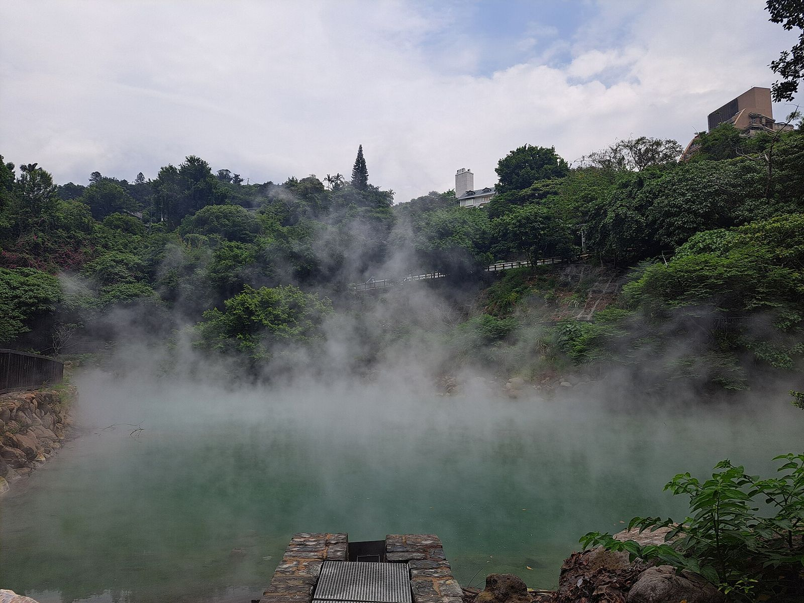

베이터우 온천·양명산 일일투어, 신베이터우에선 뭘 먹을까?
화산 지형 양명산과 온천 마을 베이터우를 하루에 돌기 전에, 볼거리와 신베이터우 근처 맛집을 챙겨보세요.
게시
타이베이 북쪽 온천 마을 베이터우(北投) 뒤로 화산 지형 양명산(陽明山)이 이어져요. 둘을 하루에 묶는 투어라면 온천 마을 쪽에서 한 끼를 먹는 동선이 자연스러워요.
01 · 양명산과 베이터우는 어떤 곳일까
양명산 국가공원은 大屯 화산군이 중심이라 화산체, 분화구, 분기공, 온천이 핵심 풍경이에요. 산자락의 신베이터우(新北投)는 온천 호텔과 공중 온천이 모인 온천 마을이고, 베이터우 공원(北投公園) 옆 지열곡(地熱谷)은 베이터우 온천의 원천 가운데 하나예요.

02 · 꼭 볼 것
지열곡(地熱谷) 1년 내내 유황 증기가 피어올라 '地獄谷'이라고도 불러요. 온천수 온도가 98℃에 이르고 물빛이 옅은 초록빛이에요.
小油坑 해발 약 805m의 후화산 활동 지대로, 분기공과 유황 결정을 볼 수 있고 七星山·大屯山 같은 화산 봉우리가 보여요.
擎天崗 탁 트인 초원으로 물소와 초원 생태를 볼 수 있는 곳이에요.
03 · 가는 법
투어로 가기 일정, 포함 사항, 출발 장소와 시간은 상품 옵션마다 달라요. 예약 전에 클룩 상품 페이지에서 꼭 확인하세요.
지열곡 직접 가기 MRT 淡水信義線 신베이터우역에서 光明路 옆 北投溪를 따라 걸어서 약 15분이에요. 온천 호텔 예약은 베이터우 프라이빗 온천 예약 글을 참고하세요.
04 · 지열곡 개방 시간 (2026년 10월 기준)
| 내용 | |
|---|---|
| 개방 시간 | 화~일 09:00~17:00(5월 15일~9월 14일은 18:00까지) |
| 휴관 | 월요일(공휴일이면 개방), 음력 섣달그믐, 설날 |
| 입장료 | 무료 |
05 · 베이터우에서 들르기 좋은 근처 맛집
지열곡에서 0.7~1.1km 안쪽, 신베이터우역 쪽에 지도에 등록된 가게가 모여 있어요. 아래 거리는 지도에 등록된 좌표로 잰 직선거리라 실제 이동 거리는 더 길 수 있어요.
雙月食品社 北投店 · 대만식 · 서쪽 약 0.7km 지도 메모: 베이터우의 인기 식당으로, 대기가 길어도 회전이 빨라 기다려 볼 만하다.
Ootoya Xinbeitou Restaurant · 일식 · 서쪽 약 0.8km 지도에 일식(으)로 등록된 곳이에요.
Orange Tea (健康橘子工坊) · 카페 · 서쪽 약 0.9km 지도 메모: 베이터우 족욕탕 가는 길의 음료 가게로, 여러 종류의 펄이 든 음료가 맛있다.
Penglai Tai Cai Restaurant · 대만식 · 서쪽 약 1.1km 지도에 대만식(으)로 등록된 곳이에요.
가게마다 쉬는 날과 영업시간이 다르니 방문 전 구글맵에 등록된 영업시간을 확인하세요.
지도에서 타이베이 맛집도 확인해보세요
투어 앞뒤로 들를 타이베이 맛집을 지도에서 함께 찜해두세요.